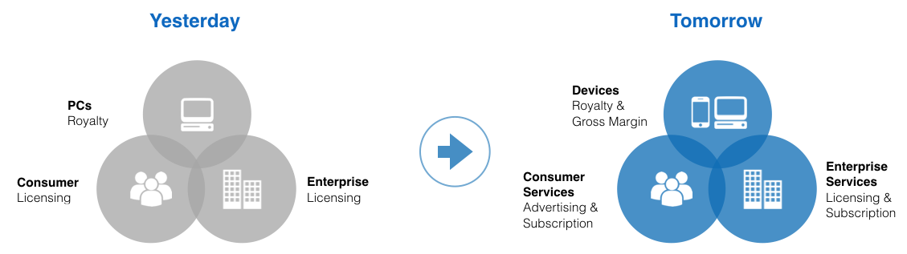
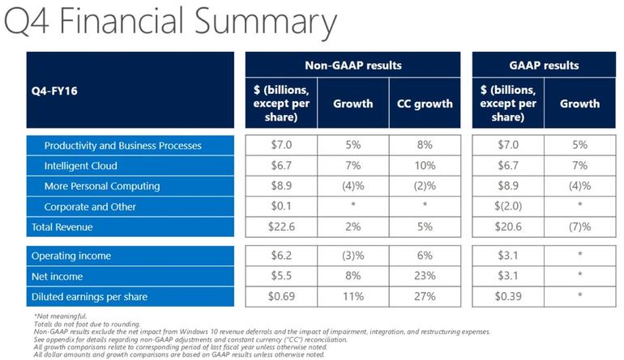
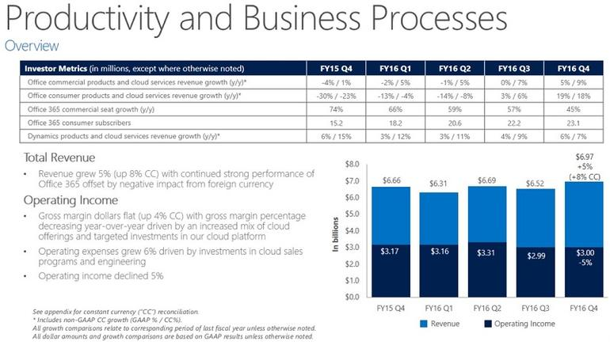
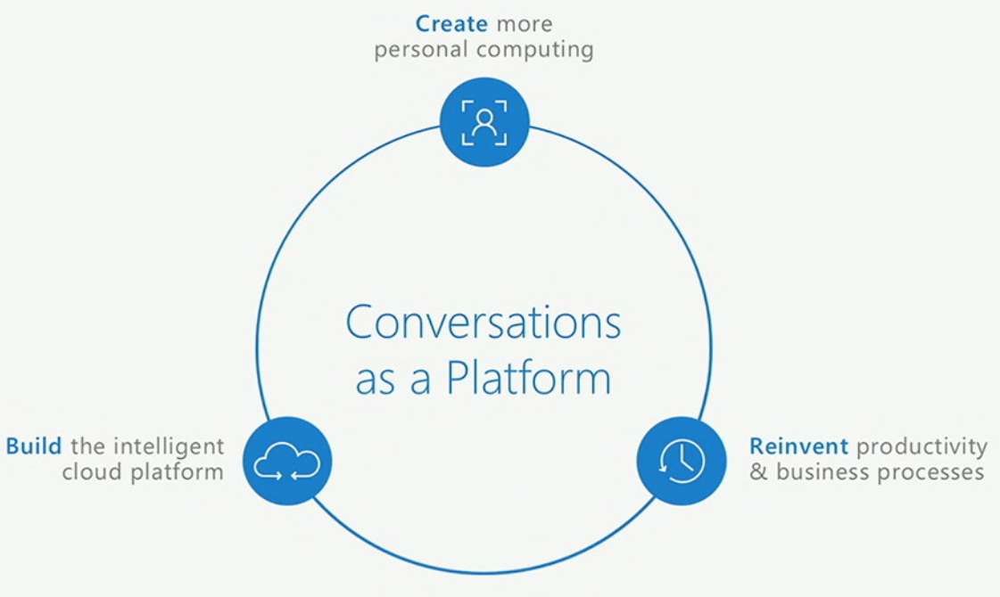
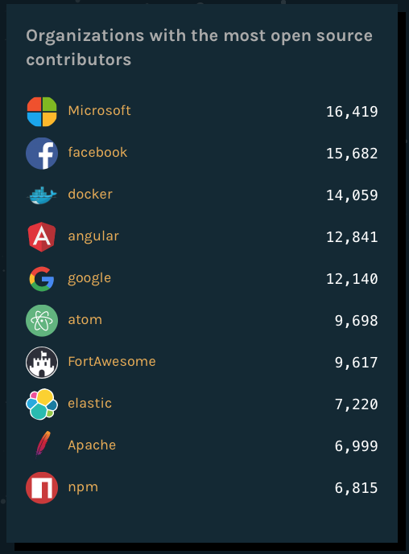
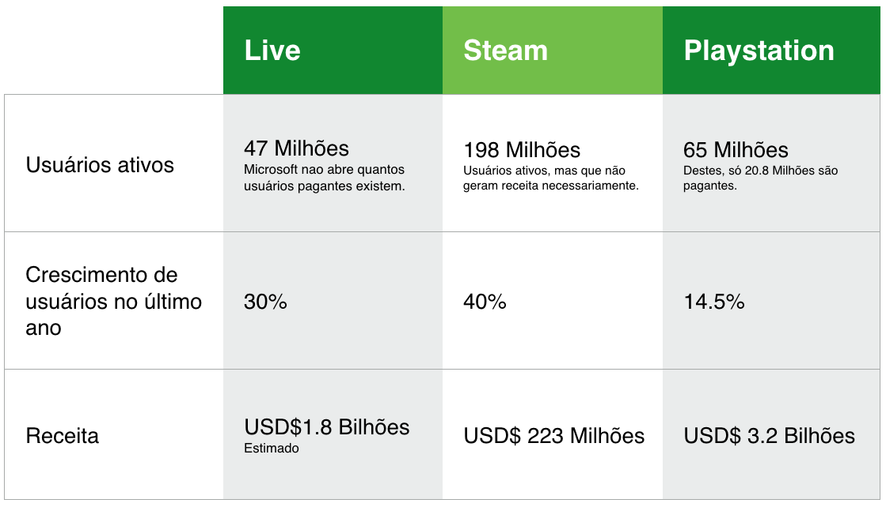
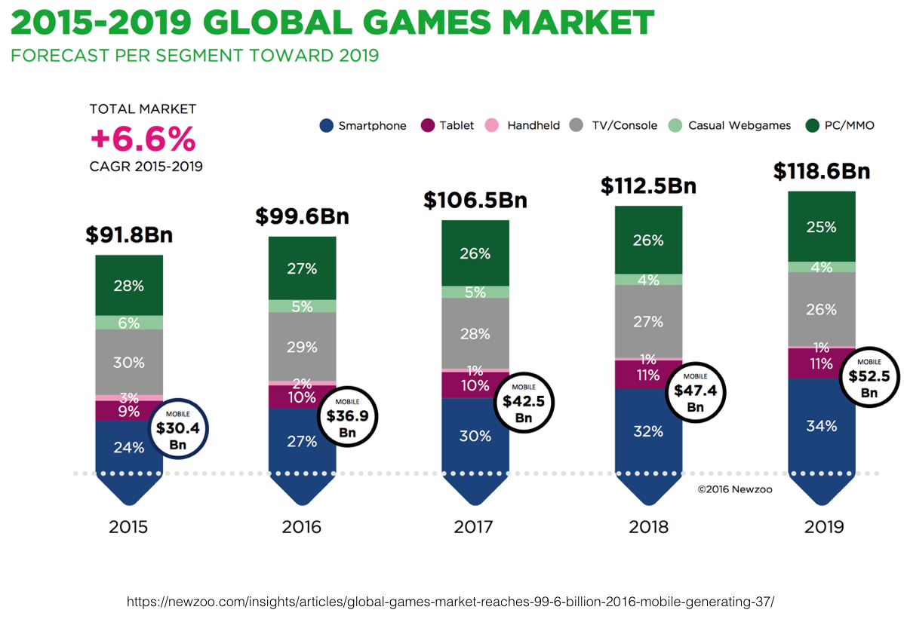
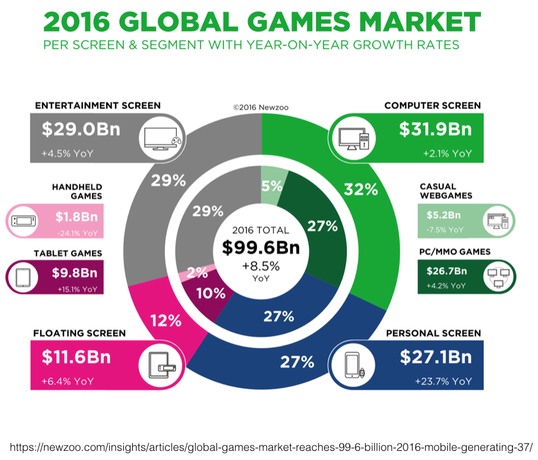

Um pequeno estudo sobre a Microsoft
Participei de uma entrevista de emprego ano passado, onde uma das fases envolveu fazer o seguinte exercício: eu deveria escolher uma das 10 empresas de tecnologia mais valiosas do mundo e imaginar que eu acabei de ser contratado pra liderar todo o desenvolvimento de um dos produtos dessa empresa. Eu deveria fazer uma apresentação mostrando uma análise da empresa e quais foram suas principais entregas recentes, além de uma definição estratégica de médio prazo, com um roadmap de entregas. Como você já deve saber pelo título desse artigo, eu acabei escolhendo a Microsoft.
A apresentação que fiz na entrevista está logo abaixo. Depois, continue lendo esse texto, onde resumi todas as informações que passei na apresentação:
A Microsoft mudou muito nos últimos anos, principalmente depois que o Satya Nadella começou a comandá-la. O que era uma empresa solitária, toda poderosa e auto suficiente se transformou numa empresa colaborativa, com uma visão realmente clara de futuro e principalmente antenada nos movimentos e as tendências tecnológicas do mercado.
Como um dos objetivos da tarefa era escolher um produto da empresa, a primeira ideia que tive foi de transformar o Edge em um browser multiplataforma. O Edge é um browser sensacional e um dos mais modernos, por isso, seria interessante ter uma versão para Mac e Linux. Isso iria de encontro ao plano da Microsoft de expandir seus domínios em plataformas não próprias, como ela tem feito disponibilizando apps para iOS e Android. Mas eu queria sair da minha zona de conforto, por isso decidi escolher algo que não tinha relação direta com Web, logo tive uma outra ideia: transformar o Xbox em um app de jogos multiplataforma por meio de streaming de games, o famoso GaaS.
Ideia escolhida, vamos pesquisar sobre a Microsoft.
A visão atual e futura da Microsoft
Com o comando do Steve Ballmer, a Microsoft tinha uma visão resumida em duas palavras: Devices + Services. A ideia era ter hardware e software para consumidores e empresas. Era muito comum ouvir o Ballmer falar sobre “família de dispositivos” da Microsoft.
O Surface é um ótimo aparelho, mas ainda estava longe de ter as vendas de um iPad, quem dirá chegar perto das vendas de tablets com Android. O Windows Phone não decolou nem com a compra da Nokia. O Xbox dá dinheiro, mas nos últimos quarters de 2016 ele estava dando prejuízo de uns 5% pra empresa (este número está nos reports). O Windows está dando prejuízo, embora tenha se recuperado com o Windows 10 (o Windows 8 foi embaraçoso pra MS), mesmo com a Microsoft liberando o upgrade gratuito para quem tinha Windows 8.
O mantra do Satya Nadella é um pouco diferente: Mobile + Cloud. A palavra Mobile não se refere apenas aos Smartphones, mas também aos Tablets, PCs, Notebooks, Consoles e qualquer outro dispositivo (sendo ou não da Microsoft) que o usuário utilize e que seja diferente do Desktop.
Ele se refere ao Cloud sendo um ambiente escalável para manter dispositivos e serviços sincronizados e conectados. Sem uma arquitetura de cloud bem definida, a Microsoft não conseguiria tornar real seu plano de Cloud First + Mobile First. A M$ precisa jogar suas coisas no Cloud para tornar possível a exploração de novas fronteiras, isso é: serviços e apps fora dos seus dispositivos e sistemas próprios.

Veja que a maneira como a Microsoft autocentralizava o negócio dela. Ela basicamente ganhava dinheiro apenas com royaties e licenças de software. Perceba que para ganhar com royaties e licenças de software, ela precisa fazer com que seu software vire uma plataforma. Se você parar de usar o Office e o Windows para usar o Google Drive no Mac, a Microsoft perdeu. Se você parar de usar só o Office ou só o Windows, a M$ perdeu. Ela quer que você continue usando seus serviços e softwares em qualquer lugar, seja ele da Microsoft ou não. Por isso, uma nova visão mais vantajosa é juntar receita de assinaturas e ads, além de continuar mantendo royalties e licenças.
O Google e a Apple já fazem isso há anos. Você usa o Google Drive gratuitamente, mas pode pagar para ter mais espaço. Há ads em vários outros serviços do Google como Gmail e a Busca. A Apple se baseia muito em assinaturas como no iCloud e no iTunes.
 
Só de Office 365 a Microsoft tinha 23 Milhões de assinantes em Julho de 2016. Com todos os serviços de assinatura a Microsoft faturou no Q4 2016 algo em torno de USD$26 Bilhões. Isso inclui produtos como Azure, Dynamics 365 e Office 365.
Nadella knows millions of iOS, OS X, Chrome, and Android users will likely never come back to Windows but still need Microsoft software. The cross-platform opportunity is too big to ignore, even if it strengthens Windows competitors. — Michael Endler
Na realidade Mobile e Cloud precisam se interagir como se fossem um só. Não existe potencial em serviços baseados em Cloud, mas que não estão conectados a nenhum dispositivo… Como o Cloud conseguiria interagir com o mundo real? É pelo Cloud que chegamos aos dispositivos. E quando falamos de dispositivos, pense que o dispositivo pode ser um sensor, um dispositivo móvel, um tablet, uma tela gigante na sala de casa ou na sala de reunião em uma empresa. Do outro lado da moeda, um dispositivo que não está conectado no Cloud, não pode se relacionar com outros dispositivos e principalmente com os serviços da Microsoft (ou qualquer outro player). Entendeu a sinergia que a Microsoft está buscando?
A visão de futuro da Microsoft é muito, mas muito legal. Ela quer se focar em conversações.

O novo mantra é: Conversations as a Platform. Isso tem bastante a ver com o que temos visto com a era dos assistentes pessoais como a Cortana, Siri etc. Além dos Chatbots que estão dominando vários mercados. Veja esse vídeo da apresentação que eles fizeram em Março do ano passado:
Além disso, ela tem focado bastante em aparelhos como o HoloLens. Mesmo que somente para empresas nesse primeiro momento, é impossível não pensar na integração do HoloLens com o Xbox.
A saúde do ecossistema é mais importante que as políticas de licença.
Personas
Pra tudo isso funcionar, ela definiu três personas diferentes: Consumidores, Desenvolvedores e Profissionais de TI.
- Consumidores: Ela quer ajudar os Consumidores (usuários comuns e profissionais) a fazerem mais em qualquer dispositivo.
- Desenvolvedores: Ela quer ajudar os desenvolvedores a criarem serviços e sistemas inovadores provendo dispositivos e softwares.
- Profissionais de TI: Ajudar na gestão e na proteção dos assets da empresa, de forma a evitar problemas com limitações de segurança, implantações, etc.
Na estratégia de cloud, a Microsoft já tem facilitado ambientes do Azure para Linux. Azure suporta atualmente CentOS, CoreOS, Debian, openSUSE, Oracle Linux, Red Hat Enterprise Linux (RHEL), SUSE Linux Enterprise Server (SLES) e Ubuntu.
Você sabia que a Microsoft tem mais contribuidores nos projetos Open Source do Github dela que o Facebook e o Google?

Os concorrentes
Eu não listei todos os concorrentes do mundo, mas selecionei dois que eu julguei os principais: Steam e Playstation.

Levantei os números de cada um, além dos números do Xbox. Aqui eu já enfrentei um problema: o que é um Usuário Ativo para esses caras? Os três tratam usuários ativos de forma diferente:
- a Microsoft não abre quantos usuários pagantes existem no Xbox Live, mas a Live tem mais de 42 Milhões de usuários, que podem ou não gerar alguma compra/renda.
- o Steam trata usuários ativos como usuários que jogam. Logo, o número é bem maior, algo em torno de 198 milhões de jogadores, que podem ou não gerar alguma compra/renda.
- a Sony é um pouco mais transparente: eles tem 65 Milhões de usuários na PSN, mas só 20.8 Milhões são pagantes.
A receita de cada que é estrondosa. Veja que o Xbox e o Playstation ficam na casa dos Bilhões. Sendo que o Playstation ganha quase que o dobro da Microsoft. E esse número da Microsoft também não reflete o valor real, já que eles colocam ali o valor gastos com a compra de jogos também, não apenas com a Live. Perceba que a Steam fica na lanterna. Pelo que eu pesquisei, ela fica lá em último lugar por causa das promoções, bundles e etc.
O mercado de jogos
Eu gosto de jogar video game, mas não jogo desde que meu Xbox quebrou e eu decidi tentar usar esse tempo com coisas mais úteis. Mas mesmo eu gostando bastante de jogar, eu não tinha ideia do tamanho do mercado de jogos. Eu sei que eles faturam milhões. Mas qual o cenário global dos jogos? Quais os mercados que o Xbox atua?

Em 5 anos o mercado de jogos cresceu algo em torno de 6.6%. Perceba o aumento do mercado de jogos para smartphone e mobile, comendo quase 46% de todo o valor, faturando algo em torno de USD$52.5 Bilhões.

Depois que eu parei de jogar em consoles frequentemente, eu me entreguei a jogos casuais como Clash of Clans, HearthStone, Mario Run etc. Esses jogos pegam exatamente um público como eu, que quer continuar jogando, mas não tem uma, duas ou três horas disponíveis para sentar na frente de uma televisão com calma.
Outra coisa que dá pra perceber, é que o mercado que o Xbox atual é responsável por apenas 29% da fatia total, que corresponde a 29 Bilhões. Ela cresce algo em torno de 4.4% ao ano.
Se levarmos em consideração, a Microsoft está presente em dois setores: Entertainment Screens com o Xbox e Computer Screens com a venda de jogos de PC. Só falta ela ser inserida nos mobiles, o que não é muito fácil, já que o Windows Phone foi um fiasco.
O Roadmap
Como eu não precisava dar datas exatas, mesmo por que eu não tenho ideia de quanto tempo levaria cada fase, além disso, eu gosto de metodologias ágeis, logo, se fosse na vida real, eu não tenho um roadmap adiantado em anos. Os principais pontos do plano seriam:
- Aplicativo SmartGlass se transforma em segunda tela para console Xbox, tanto pra jogos quanto pra outras medias
- Lançamento Aplicativo do Xbox para Plataforma Windows. Console e App Windows tem a mesma interface com funcionalidades parecidas. Contudo, usuários ainda fazem downloads dos jogos (como no Steam)
- Jogadores do Console podem jogar online sem distinção com jogadores do Windows
- Windows e o Console fazem Stream dos jogos. Jogadores ainda tem opção de download por conta da velocidade de conexão.
- Futuro:
- Stream dos jogos para Mac / Linux?
- Stream de Jogos nos Tablets e Smartphones?
- HoloLens funcionando em tudo isso?
No final do plano, o Xbox já estaria no setor de Game as a Service (GaaS), virando uma espécie aplicativo multiplataforma, que possibilita jogar seus jogos via Cloud ou baixando os jogos, como o Steam.
Isso abriria outra oportunidade para Microsoft (que era uma das minhas listadas na apresentação) que é de transformar o Xbox em um centro multimedia de verdade, competindo com o AppleTV diretamente. Ele deixaria de ser um aparelho cuja função principal seria jogar e passaria a ser um aparelho que controla as atividades digitais da casa.
Oportunidades e riscos
Mapeando de forma bem macro as oportunidades seriam:
- Fortalecimento do ecosistema entre Xbox + Windows 10;
- Xbox entra na concorrência com Steam (principalmente), EA Origin e Sony’s Remote Play;
- Xbox Live vira multiplataforma, abrindo possibilidades de conversão de usuários de PC’s e possivelmente Smartphones.
Nesse processo, eu li vários relatórios financeiros da Microsoft. Ela disse em cada um deles que a ideia é fortalecer o ecossistema da empresa, colocando o Windows 10 como o centro da coisa toda… Exatamente por isso que eles trocaram o sistema dos seus aparelhos para Windows 10, diminuindo o problema de compatibilidade entre as plataformas.
Os riscos e dúvidas seriam:
- Provavelmente usuários deixam de comprar o console; Xbox teve uma queda de 5% na receita no último quarter de 2016.
- Jogadores não poderão fazer stream de jogos que foram comprados para PC “fora” da Live; Ou seja, só jogos comprados da Live seriam “streamados”.
- Fabricantes de Jogos poderão continuar vendendo seus jogos para PC fora da Xbox Live?
- O aplicativo de jogos multiplaforma que eu estou sugerindo ainda teria Xbox no nome ou poderia passar a se chamar apenas Microsoft Live?
Uma pergunta que surgiu na entrevista foi: Quais os riscos para o usuário?
Eu respondi que o risco para o usuário seria não ter esse ecossistema funcionando adequadamente. Querendo ou não, a Microsoft ainda está montando seu ecossistema. Ela ainda não é como o Google ou a Apple que tem seus jardins dourados funcionando muito bem. Ela começou a sair da caixa agora, colocando seus apps em lugares que ela não é dona, como é o caso do pacote Office rodando perfeitamente e de graça no iOS.
Para ler mais
Foi um exercício bem legal. Tive que fazer em uns 4 dias. Achei que a apresentação ficou muito simples. Mesmo assim eles gostaram bastante. Mas como disse lá em cima, o que eu mais gostei foi de buscar informações sobre uma única empresa e se aprofundar na sua cultura, visão de futuro etc. E você, o que achou?
Dados Faturamento Raking:
- http://fortune.com/2016/02/04/most-valuable-companies-fortune-500-apple/
- http://www.businessinsider.com/4-most-valuable-public-companies-all-tech-companies-2016-8
- Microsoft Q4 strong, Office 365 consumer subscriptions top 23 million
- http://www.nasdaq.com/screening/companies-by-industry.aspx?industry=Technology&sortname=marketcap&sorttype=1
Visão estratégica Microsoft
- Reports financeiros da Microsoft
- Mobile First, Cloud First
- Microsofts Mobile First Cloud First Strategy Explained
- Microsoft Business Model mix of Google and Apple
- Microsoft turns Bing from a joke into an ad Business
- Microsoft Bing ad Revenue Growth
- Surface Hub dispositivo da Microsoft para empresas
- Surface Studio